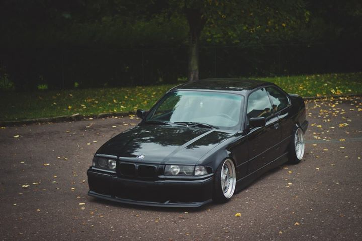
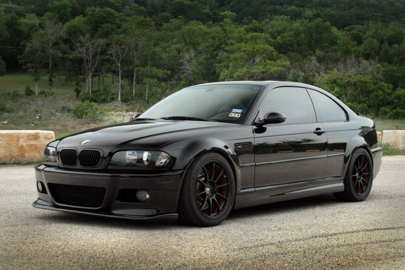
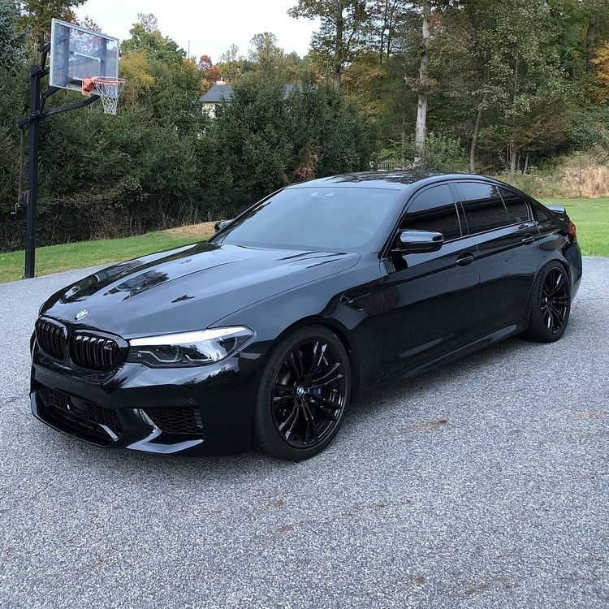
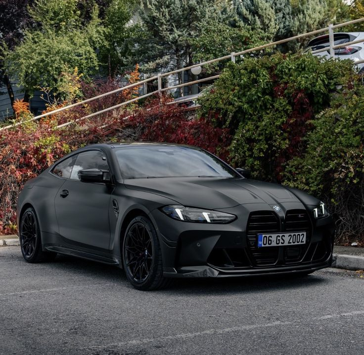

Abaixo temos 4 modelos icônicos da fabricante Alemã, ao longo de sua historia
BMW E36
A BMW E36 marcou os anos 90 com um visual limpo e esportivo. Foi um dos modelos que popularizou a pegada “sedã com alma de pista”, equilibrando conforto e desempenho. Até hoje é querido pela galera por ser bonito, confiável e fácil de modificar. Motor: 4 ou 6 cilindros Potência: ~100 a 321 cv (M3) Tração: Traseira (RWD) Câmbio: Manual / Automático

BMW E46 M3
A E46 M3 é simplesmente lendário. Equipado com um motor seis cilindros aspirado, ele entrega potência, som absurdo e dirigibilidade insana. Muitos consideram esse o melhor M3 já feito, e não é à toa. Motor: 6 cilindros em linha 3.2 aspirado Potência: 343 cv Tração: Traseira (RWD) 0–100 km/h: ~5,1 s

BMW M5
A BMW M5 é a prova de que um carro grande pode ser brutal. Ele junta luxo, tecnologia e um motor extremamente potente, sendo um sedã que humilha muito esportivo por aí. Confortável pra viajar, monstruoso quando pisa. Motor: V8 4.9 aspirado Potência: 400 cv Tração: Traseira (RWD) 0–100 km/h: ~4,8 s

BMW M4 G82
A BMW M4 G82 representa a nova era da divisão M. Com visual agressivo e motor turbo extremamente potente, ele entrega desempenho absurdo sem abrir mão da tecnologia. É um esportivo moderno, feito pra pista e pra rua. Motor: 6 cilindros 3.0 biturbo Potência: 480 a 510 cv Tração: Traseira ou AWD (xDrive) 0–100 km/h: ~3,5 s

Esses foram alguns do modelos mais iconicos da BMW, caso queira ver outros modelos e especificações, Clique Aqui